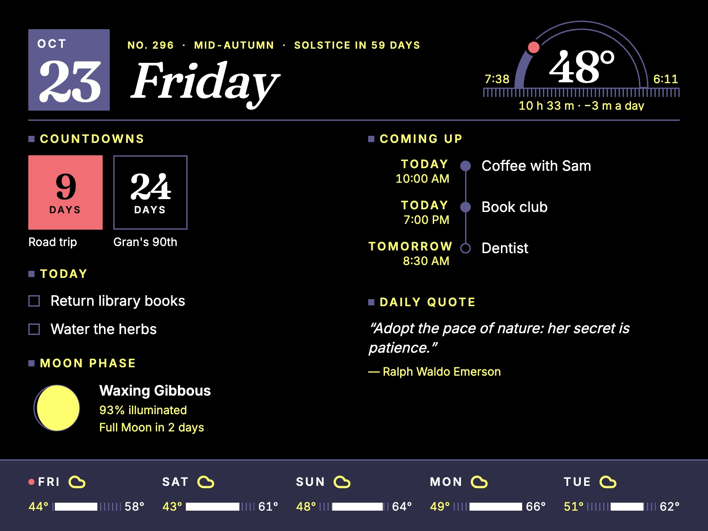

PartsSetupStatus
Build a Hearth.
Start with the software on any machine you have, and use it in a browser. When you want it on the wall, add a small host and a framed e-paper panel.
Two devices, two power budgets.
Don't treat “the frame” as one device. The host runs the whole stack — the web app and eleven small services — and can live in a closet or on a shelf anywhere on your network.
The frame client is a small Raspberry Pi mounted behind the panel. It fetches a finished image, pushes it to the e-paper and listens for button presses. That's all — so the thing on your wall stays at well under a watt.

The parts list.
Product lineups and prices drift — check the current listings before ordering. The hardware guide explains every choice.
Pimoroni Inky Impression 13.3"
E Ink Spectra 6 — six inks at 1600 × 1200, about 150 PPI. Includes the driver board, four buttons along one edge, and a header the Pi plugs straight onto.
Raspberry Pi Zero 2 W
The “WH” version, with a pre-soldered header. Idles around 0.6 W. A Pi 4 works too (that's what it's being developed on), plus a microSD card and a 5 V USB supply.
Raspberry Pi 4/5 or a mini PC
Anything that runs Docker: a Pi with 4–8 GB, or an Intel N100-class mini PC. Prefer an SSD over microSD — many services write to SQLite all day.
A deep shadow-box frame
Deep enough for the panel, driver board and Pi. No glass in front — glare is exactly what e-paper avoids. Leave the buttons reachable and a path for the power cable.
Four buttons, no app needed
The Inky's buttons cover the quick actions; your phone handles everything else. The planned starting mapping:
From clone to dashboard.
You'll need Docker Engine 25+ with Compose v2.22+. The README has the full details.
-
Get the code
Clone the repository onto the machine that will be your host.
git clone https://github.com/lrv1668-gif/Hearth.git cd Hearth -
Tell it where home is
Services that need an API key read a small
.envfile. Create one for each service listed in the README — Compose expects them all to exist, but you can leave the keys blank for integrations you don't use. Tasks, quotes and news need nothing. The home location and time zone are set later, in Settings → Home.touch src/{Weather,Spotify,Calendar,Photos,Birds,Almanac,Trains}/.env -
Start the stack
Docker Compose builds and starts everything behind Caddy. Then open the host in a browser.
docker compose -f docker-compose.yml up --build -
Make it yours
In Settings, set where home is — this device's location, a city, or coordinates — pick a theme and typeface, choose which widgets show and where, connect any integrations below, and design the frame with a live preview — including which mode it shows when.
Connect what you use.
Every integration is optional. Each lives in its own service, caches what it fetches, and keeps showing the last good data if the outside world goes quiet.
| Feature | Source | Needs |
|---|---|---|
| Tasks & countdowns | Built in | Nothing |
| Almanac & moon | Computed on the host | Home location (Settings), frost dates |
| Weather | Open-Meteo | Home location (Settings) |
| Daily quote | ZenQuotes | Nothing |
| News | Any RSS or Atom feed | Feed URLs, added in Settings |
| Photos | Your uploads, or Unsplash | An Unsplash key for live photos |
| Calendar | Google Calendar & Tasks | Google OAuth client |
| Now playing | Spotify | Spotify app credentials |
| Birds nearby | eBird | Free eBird API key |
| Trains & buses | Transitland | Transitland API key |
Honest progress.
Hearth is a work in progress. Here's what's real today and what's next.
| Piece | Status |
|---|---|
| Web dashboard, calendar, ambient slideshow, settings | Built |
| Frame layouts — Ambient, Daily, Photo, Countdown, Night and Note, 13 palettes, B&W, portrait, custom panel sizes | Built; viewable in any browser at /frame |
| Shared frame settings with a live preview | Built, in the Display service |
| Frame client (inkypull) | Written and tested off-hardware |
| Host-side capture and dithering to the six inks | Built; shown as a dithered preview in Settings |
| Panel endpoint the frame client pulls | Next up |
| Mode schedule, manual override and pinned photo | Built, in the Display service |
| Buttons, presence-aware refresh | Planned |
| Plant care | On the wish list |
Small services, one quiet page.
Each concern — tasks, weather, photos, the calendar — is its own small ASP.NET Core service with its own SQLite file, so one flaky upstream can't take the rest down. CI publishes amd64 and arm64 images, and a host can update itself on a timer.
Read the software design and the product vision for the full picture.
| Frontend | SvelteKit 2, Svelte 5, Tailwind CSS 4 |
| Services | .NET 10, ASP.NET Core Minimal APIs |
| Storage | SQLite, one file per service |
| Proxy | Caddy 2 |
| Deploy | Docker Compose, multi-arch images |
| Frame client | Python on Pimoroni's inky |
Questions, ideas, a frame of your own?
Open an issue or follow along on GitHub.